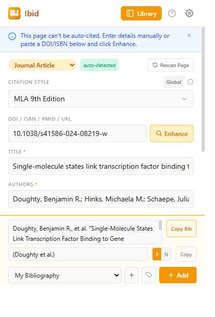
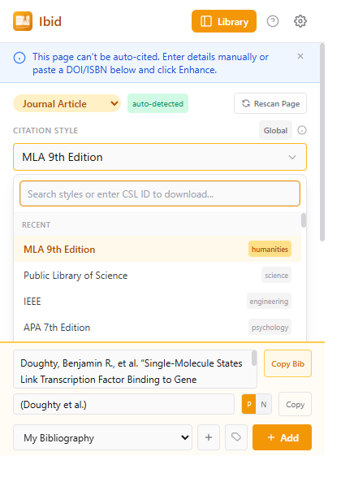
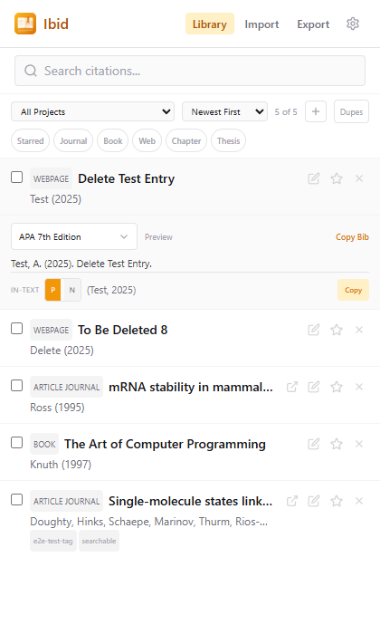
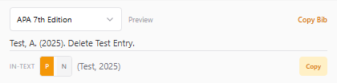
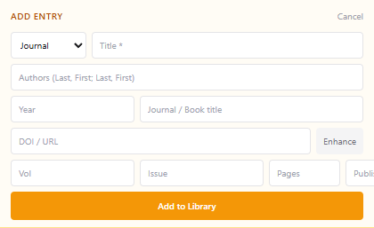
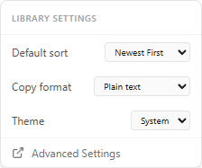
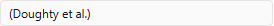
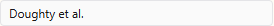
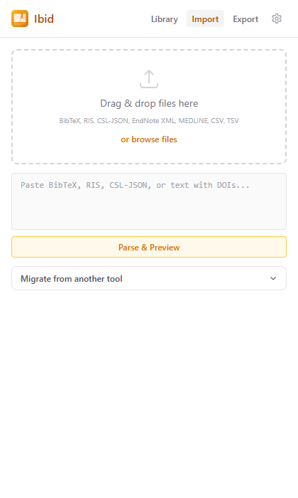
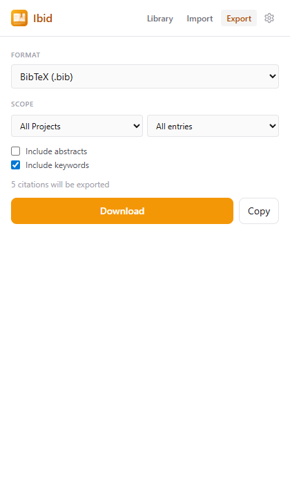

Getting Started
Ibid (from Latin ibidem — "in the same place") is a citation manager that runs entirely in your browser. All citation processing happens locally via a Rust/WebAssembly engine powered by Hayagriva, supporting 2,600+ official CSL citation styles.
- Popup — Click the Ibid icon on any page to cite it
- Side Panel — Click "Library" for full citation management
- Context Menu — Right-click for quick cite options
- Settings — Gear icon (popup and sidepanel) for style, theme, preferences
Citing a Webpage
- Navigate to the page you want to cite.
- Click the Ibid icon (or Ctrl+Shift+C).
- Fields auto-fill from structured data (JSON-LD, Highwire Press, Dublin Core, OpenGraph). If a DOI is found and fields are missing, auto-enhance fills them.
- Review, edit fields, choose citation style.
- Click Copy for bibliography or in-text citation.
- Click Add to Project to save.

Auto-Enhance & Identifier Lookup
Automatic
When a DOI, PMID, arXiv ID, ISBN, or URL is found and key fields are missing, Ibid silently resolves via multiple APIs and fills them. Enhanced fields flash saffron. If no identifier is found but a title exists, Ibid searches by title as a fallback.
Manual (Enhance button)
Paste any identifier and click Enhance:
- DOI —
10.1038/nature12373→ OpenAlex → CrossRef - ISBN —
978-0-13-468599-1→ Open Library → Google Books - PMID —
PMID:12345678→ NCBI/PubMed - arXiv —
arxiv:2301.07041→ arXiv abstract page → Semantic Scholar - URL —
https://example.com/article→ Citoid (Wikipedia)
Enhance uses smart overrides: DOI-resolved authors replace page-extracted ones when the API returns more names. Journal names from DOI resolution always take priority over page metadata.
Source Type Validation
Ibid validates your selected source type against the available metadata and warns if something looks wrong:
| Selected Type | Warning When | Suggestion |
|---|---|---|
| Journal Article | No journal name, volume, DOI | → Webpage |
| Book | No publisher, has volume+issue | → Journal Article |
| Webpage | Has DOI + journal + volume | → Journal Article |
| News/Magazine | Has DOI + volume + issue | → Journal Article |
| Thesis | No university, has container | — |
| Chapter | No book title, no publisher | — |
Warnings include a clickable "Switch to X?" link. A green "auto-detected" badge shows when the type matches metadata signals; gray "manual" when you overrode it.
Citation Styles
74 official CSL styles are bundled offline, including:
On-demand download
2,600+ additional styles from the official CSL repository can be downloaded with one click. Search for any journal or style name in the picker — if not bundled, results from the online repository appear automatically.

Projects
Organize citations into projects (e.g., "Thesis Chapter 2", "Review Article").
Creating projects
- Popup: Click + next to the project dropdown
- Library: Select "+ New Project" from the project filter dropdown
Managing projects
In the library, select a custom project → click the ⋮ (three dots) button:
- Rename — inline edit, press Enter to save
- Delete — citations are moved to "My Bibliography"
Per-project styles
A badge shows Project or Global to indicate which style is active.
Library Management
Click Library in the popup header to open the side panel:
- Search — by title, author, DOI, type, journal, keyword, tags, or notes
- Filter — by project, type chips (Journal, Book, Web, Chapter, Thesis), starred
- Sort — newest, oldest, author A-Z, title A-Z, year, type
- Star — click star icon to mark favorites
- Select — checkboxes for bulk operations (Star, Unstar, Delete)
- Edit — pencil icon to open edit panel
- Visit source — link icon (↗) opens the original page
- Delete — X icon or bulk delete
Inline preview
Click any citation title to expand the inline preview:
- Style picker — searchable dropdown with all 74+ styles, per-citation
- Bibliography — formatted reference in the selected style
- In-text — with P (parenthetical) / N (narrative) toggle
- Copy Bib and Copy buttons for one-click clipboard
Manual entry
Click the + button in the toolbar to add a citation manually. Fill in title, authors, year, DOI/URL, and other fields. The Enhance button auto-fills from a DOI.
Settings
Click the gear icon (⚙) in the header for library settings: default sort, copy format (plain text / rich text), theme (light / dark / system), and a link to advanced settings.
Library with inline preview

Preview detail

Manual entry

Settings

P/N in-text toggle


Editing Citations
Click a citation in the library to edit all fields. Author format: Last, First; Last, First. Date format: YYYY-MM-DD or YYYY.
Edits are permanent and never revert to auto-extracted values.
Importing Citations
Side panel → Import tab. Three methods:
- Drag & drop .bib, .ris, or .json files
- Browse files via file picker
- Paste BibTeX, RIS, CSL-JSON, or plain text with DOIs (format auto-detected)
- Bulk DOI import — paste any text containing DOIs, they're extracted and resolved via CrossRef
Preview shows parsed entries with checkboxes for selective import. Choose which project to import into with the "Import to" dropdown. Duplicates are auto-skipped.

Exporting Citations
Side panel → Export tab. Formats:
Filter by project and scope (all entries, starred only, journals only, books only, webpages only). BibTeX: toggle abstract/keywords. Download or copy to clipboard.

Duplicate Detection
Checks on add and import. Match criteria:
- DOI (case-insensitive)
- ISBN (ignoring hyphens/spaces)
- URL (exact, excluding search engines)
- Normalized title (letters+digits only, >10 chars)
Popup: confirm dialog. Import: silently skipped with count.
Already in Library
When you visit a page that's already in your library, the popup shows a compact status bar:
- View — opens the library side panel
- Update — saves current edits to the existing entry
- The Add button remains available to add to a different project
PDFs & Local Files
When you open a PDF, Ibid shows an action card with options:
- Enhance via DOI — if a DOI is detected in the URL (arXiv, Nature, Springer, etc.), click to resolve full metadata instantly
- Scan PDF Text — downloads and scans the PDF to extract title, DOI, authors, and dates from the document text
- Enter manually — fill fields yourself or paste a DOI and click Enhance
How PDF scanning works
- PDF info dictionary — title, author, date, keywords from binary metadata
- XMP metadata — richer embedded XML with DOI, journal name, volume, issue, pages
- Full text extraction — Rust/WASM extracts text from the first pages to find DOI, dates, title, and authors
- Title search — if no DOI is found, Ibid searches by title on OpenAlex to find the paper
- DOI from URL — recognizes DOI patterns in URLs from academic publishers
- DOI from filename — detects DOIs in downloaded filenames (e.g.
10.1038_s41586-024-07386-0.pdf)
Right-click options on PDFs
- Right-click a DOI link → "Cite linked page" — resolves via CrossRef
- Right-click an ISBN link → "Cite linked page" — resolves via Open Library
- Select a DOI/ISBN text → "Look up selected DOI/ISBN"
- Select text with multiple DOIs → "Import DOIs from selection" — bulk import via Library
Local files
For file:/// URLs, enable "Allow access to file URLs" in chrome://extensions for auto-extraction. If the filename contains a DOI (e.g. 10.1038_s41586-024-07386-0.pdf), it will be detected automatically.
Quick Settings
Click the gear icon in the popup header:
- Default Style — global fallback (all 9 bundled editions)
- Locale — language for terms (English, Spanish, French, etc.)
- Theme — Light / System / Dark
- Help — opens this page
- Advanced Settings — full options page
Keyboard Shortcuts
Customize at chrome://extensions/shortcuts
Backup & Restore
From Advanced Settings:
- Backup — downloads JSON with all data
- Restore — upload a backup file
- Clear All — deletes everything (irreversible)
Scholarly API Access (optional)
Ibid can fetch metadata from scholarly APIs for better citation accuracy. This is optional — core citation features work without it.
What it enables
- arXiv papers — fetches complete author lists and abstracts from arXiv abstract pages
- DOI resolution via doi.org — follows DOI links to publisher pages for full metadata
- Semantic Scholar — alternative metadata source for computer science papers
- Wikipedia/Citoid — resolves any URL to structured citation data
When is it needed?
Some scholarly APIs (arXiv, Semantic Scholar, doi.org, Wikipedia/Citoid) require explicit browser permission because they don't allow cross-origin requests from extensions. You'll see a hint in the popup when Ibid needs this access — typically when:
- Citing an arXiv paper (PDF or abstract page)
- Resolving a DOI that redirects through doi.org to a publisher page
- Using title-based search when no DOI is found (e.g. PDFs without identifiers)
- Resolving a URL to citation data via Wikipedia's Citoid service
Without this access, Ibid still works — it uses OpenAlex, CrossRef, Open Library, Google Books, and NCBI which don't require extra permissions. You may get less complete metadata for arXiv papers and some edge cases.
How to enable
Go to Settings (gear icon → Advanced Settings) and click Grant API access. You can also grant access during first-time setup on the Welcome page. If you previously denied the permission, you can grant it anytime from Settings.
Which APIs are contacted
| API | When used | Data sent |
|---|---|---|
| OpenAlex | DOI lookup, title search | DOI or title string |
| CrossRef | DOI lookup (fallback) | DOI |
| arXiv | arXiv paper metadata | arXiv ID |
| Semantic Scholar | arXiv papers (fallback) | arXiv ID |
| Citoid (Wikipedia) | URL-based citation | Page URL |
| Open Library | ISBN lookup | ISBN |
| Google Books | ISBN lookup (fallback) | ISBN |
| NCBI/PubMed | PMID lookup | PMID |
Privacy
- Zero telemetry, zero tracking, zero analytics
- All citation processing runs locally via Rust/WASM — no server
- No bandwidth abuse — API requests are queued and rate-limited
- Minimal permissions:
activeTab,storage,contextMenus - Scholarly API access is optional — you choose whether to grant it
- Network calls are made only for: identifier lookups (DOI/ISBN/PMID/arXiv), style downloads from GitHub, and article page fetches when you click Enhance
- No account required, no sign-up, no cloud sync (yet)
- Your citation library is stored locally in
chrome.storage.local— only you can access it
Troubleshooting
Empty form on page open
Content script can't inject on chrome://, extension pages, or some restricted sites. Use manual entry or paste a DOI.
Author missing
Paste the DOI and click Enhance. CrossRef usually has the correct author list.
Fallback citation format
WASM may still be loading. Wait a moment and change the style to re-render.
Extension not working after update
Go to chrome://extensions/ and click the reload icon on Ibid.
Supported Formats Reference
Import
| Format | Extension | Auto-detect |
|---|---|---|
| BibTeX / BibLaTeX | .bib | Starts with @ |
| RIS | .ris | Starts with TY - |
| CSL-JSON | .json | Starts with [ or { |
| EndNote XML | .xml | WASM engine |
| MEDLINE / PubMed | .nbib | WASM engine |
| CSV | .csv | Comma-separated |
| TSV | .tsv | Tab-separated |
Export
| Format | Extension | Notes |
|---|---|---|
| BibTeX | .bib | Optional abstract/keywords |
| RIS | .ris | Universal exchange |
| CSL-JSON | .json | Native, lossless |
| Text | .txt | Rendered via CSL engine |
| HTML | .html | Styled document |
| Markdown | .md | Numbered list |
| CSV | .csv | Spreadsheet import |
| TSV | .tsv | Tab-separated |
| YAML | .yaml | Hayagriva native |
| Word XML | .xml | Word bibliography |
Source types
Ibid — from Latin ibidem, "in the same place."
Privacy-first citation manager • Powered by Rust/WebAssembly (Hayagriva)